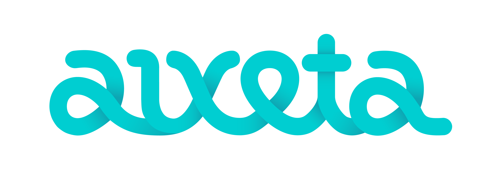

Que no t'enxampi l'inspector fent faltes!
L'inspector destacarà al teu text:
L'Inspecciona és una eina gratuïta i sense publicitat. Si l'has provada i l'has trobat útil, pots ajudar-me a mantenir-la i a millorar-la fent-te mecenes. Gràcies!
Dona'm suport a